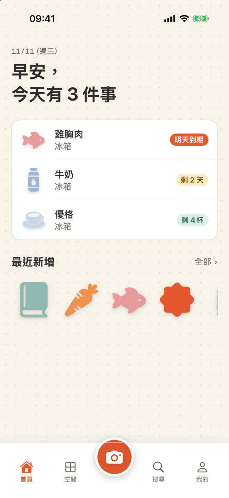
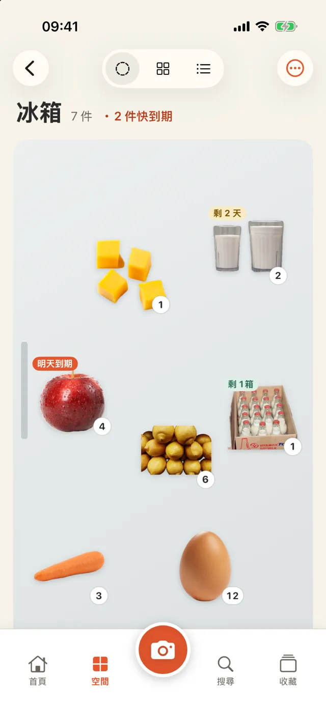
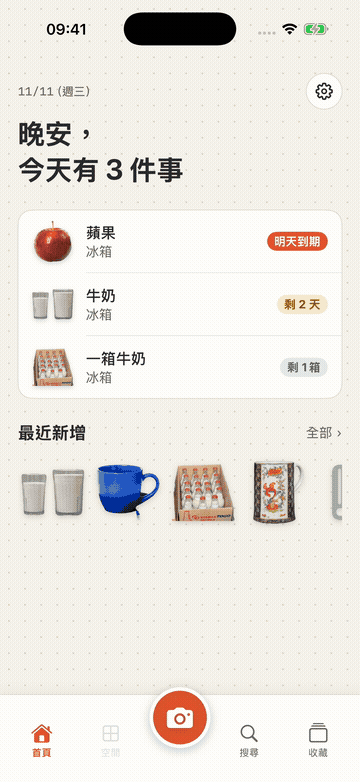
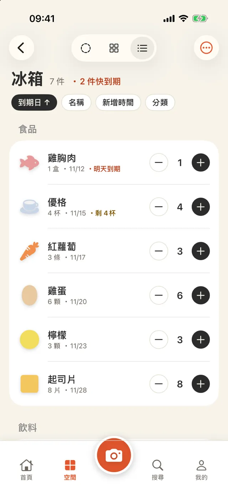
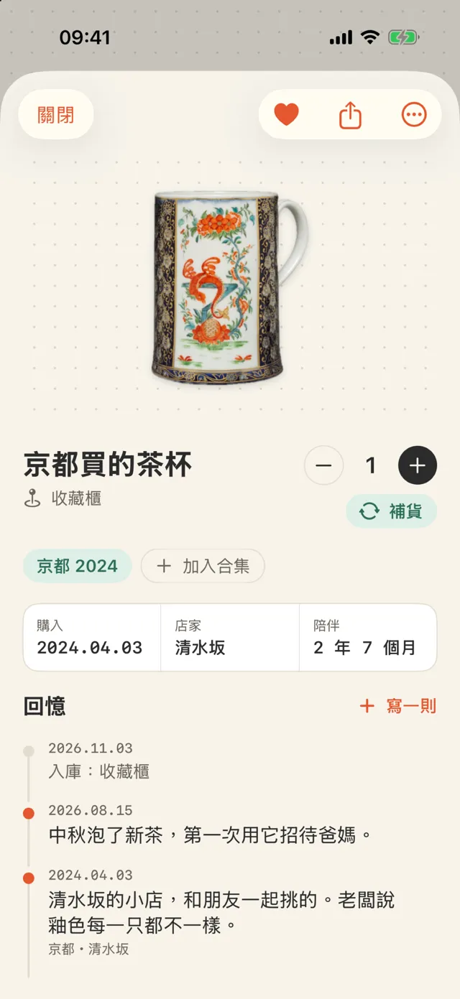
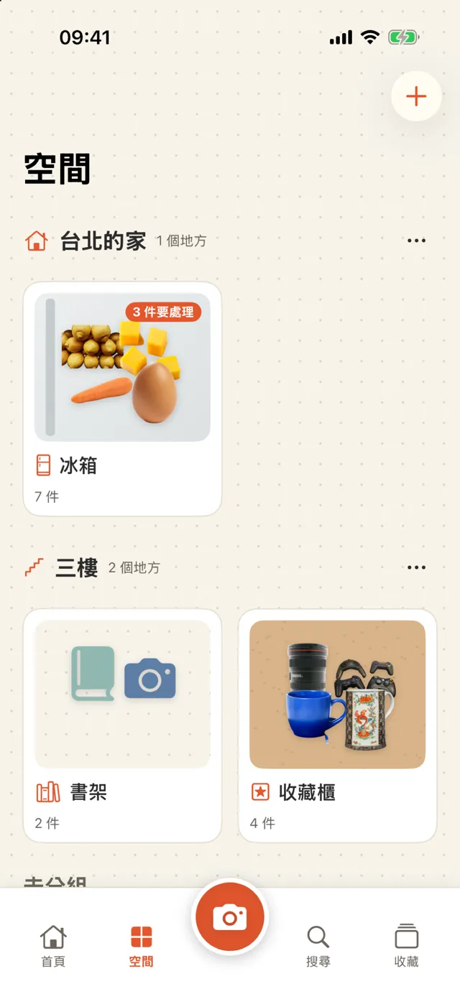
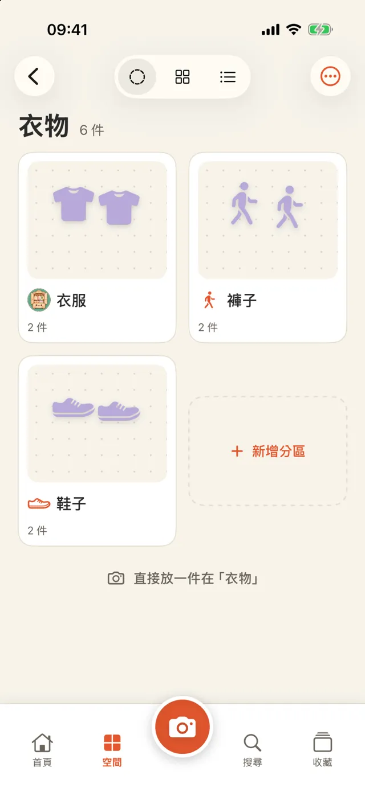
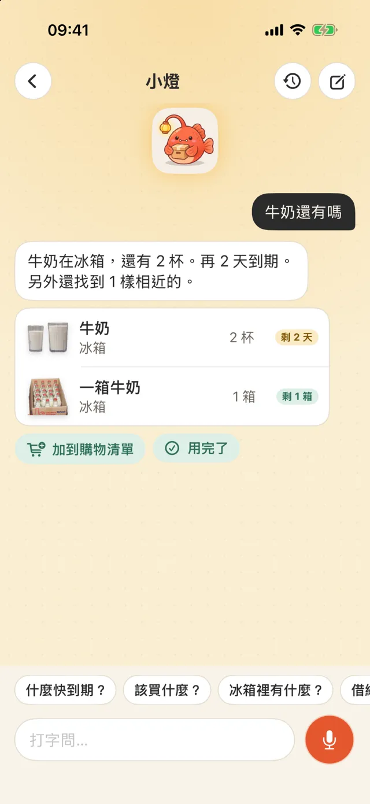
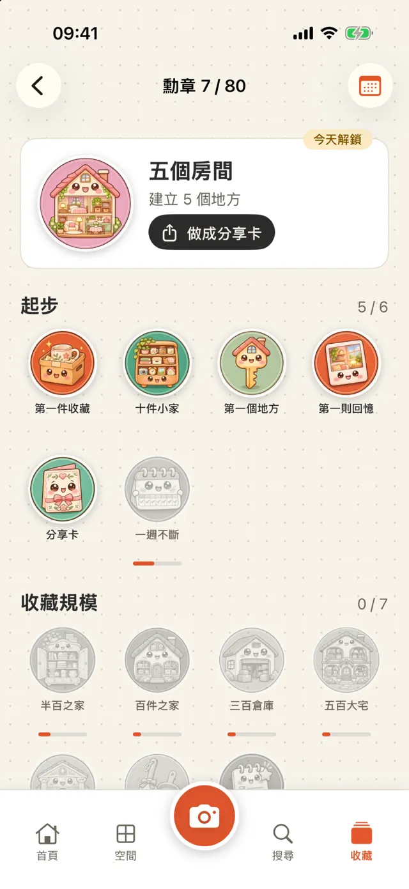

iPhone 居家收納與收藏 App
拍下來，就存起來。
要找的時候，一查就有。
冰箱裡的牛奶、儲藏間的衛生紙、書架上的書、旅行帶回來的杯子，拍一張就存好。放在哪、還剩多少、什麼時候到期，都記在手機裡。
即將在 App Store 推出- ✓ 免費下載，3 個地方免費用
- ✓ 不用註冊帳號
- ✓ 資料只在你的 iPhone

新增
拍一張，自動去背存好
對著東西按快門，照片會自動去掉背景。同一個相機畫面也會認條碼：食品查 Open Food Facts，書查 Open Library。買菜回家可以用「連續掃描」，一次存十幾件。

三種看法
陳列、網格、條列，隨時切換
陳列把照片擺在冰箱門、點格紙或軟木板上，可以拖曳、縮放。網格適合找東西，條列適合盤點：數量直接加減，用完左滑一下。

到期日
包裝上的日期，手機自己讀
拍照時會讀包裝上的到期日（西元、民國、佛曆、日韓泰的包裝都認得），請你確認後存下。到期前幾天會用通知提醒，天數可以自己設。

收藏與回憶
每件東西，都能寫下它的故事
旅行帶回的杯子、別人送的禮物，可以加照片、日期、地點和一段話。也能收成合集，例如「京都 2024」。首頁會出現「去年今天」。

空間
冰箱、800庫、書架，或自己取名
範本有冰箱、800庫（玄關或走道約 80 公分深的儲物間）、儲藏櫃、書架、衣櫃、收藏櫃、藥箱、搬家箱。沒有合適的，就自己選圖示、取名稱。要分「台北的家」「三樓」也可以，不分也行。

分層
地方裡面，還能有地方
「衣物」裡面可以再放「衣服」「褲子」「鞋子」，外面那張卡會顯示裡面有哪些地方。要搬動就用選單的「移進…」，或長按拖到另一張卡上。分類底下也有子分類，例如衣物 › 褲子，存檔時自動判斷。

問小燈
找不到的時候，用問的
在首頁問吉祥物小燈「護照在哪」「牛奶還有嗎」，打字或按住說話都行。它會回答放在哪、還剩多少、幾天後到期。語音辨識能在手機上做就不上網；沒開 AI 也能用名稱、分類、地方找。

這些時候用得到
- 出門買菜前，看冰箱還有什麼
- 煮飯前，先用快到期的
- 找三號電池放在哪
- 書借給誰了
- 搬家時記每一箱裝了什麼
- 整理旅行紀念品
- 檢查藥箱有沒有過期
50 秒看懂
從冰箱切換三種看法、加減數量，看「衣物」裡面的地方，打開一件收藏的回憶，最後問小燈什麼快到期。
AI（可選）
不用 AI 也能完整使用。想用的話有兩種來源，只在你按 AI 按鈕時才呼叫。
Apple 內建
用 iPhone 上的 Apple Intelligence，免費、不用網路，資料不離開手機。需要支援的 iPhone 與 iOS 26 以上。
自己的 API key
Gemini、Claude、DeepSeek 等。key 只存在這支 iPhone 的鑰匙圈，資料直接送到你選的服務，不經過我們。
- 幫我命名：看照片認出是什麼，建議分類與單位
- 看看這個空間：冰箱先吃什麼、儲藏間要補什麼、藥箱哪些過期（不給醫療建議）
- 一句話找東西：自動加上同義詞再搜尋
- 幫我寫回憶：把幾個字整理成一段，不加你沒說的事
勳章與分享卡
連續 30 天冰箱沒有東西過期，就拿到「冰箱守護者」。勳章、物品故事和年度回顧可以存成圖片分享，預設不放位置和價格。

基本資料
| 支援裝置 | iPhone（iOS 18 以上） |
|---|---|
| 語言 | 繁體中文、简体中文、日本語、한국어、ไทย、English |
| 價格 | 免費下載（含橫幅廣告、3 個地方、最近 2 則小燈對話）；Pro 地方不限、對話紀錄不限、沒有廣告：每週 US$1、每月 US$3 或買斷 US$5 |
| 帳號 | 不需要 |
| 資料 | 只存在這支 iPhone，可匯出 CSV；刪除後 30 天內可救回 |
| 網路 | 條碼查詢與你選的 AI 服務才會用到 |
限制
- 沒有 iCloud 同步，也不能和家人共用（之後的版本再做）
- 條碼資料庫查不到的商品，要自己取名；下次掃同一個條碼會帶出你取的名字
- 去背的效果依照片而定，失敗時會先用原照片